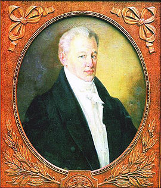

Головна сторінка
Біографія
Оцінка творчості
Цікавинки
10 ЦІКАВИХ ФАКТІВ ПРО ІВАНА КОТЛЯРЕВСЬКОГО

Люди, пам’ять про яких живе й житиме століттями, були непересічними й яскравими. Ми хочемо нагадати вам про Івана Котляревського – класика української літератури, письменника, поета, драматурга, громадського діяча, який народився 250 років тому – 9 вересня 1769 року. З його поеми «Енеїда» фактично розпочалося формування літературної української мови на основі живої народної мови.
«Енеїда» Котляревського була в бібліотеці Наполеона. А цар Микола І мав її аж 2 примірники.
Народився у Полтаві, в сім’ї канцеляриста. Закінчив Полтавську духовну семінарію та працював канцеляристом і домашнім учителем у сільських поміщицьких родинах.
Іван Котляревський не був одружений. Дослідники твердять: через нещасливу любов у юності, коли дівчина Марія, в яку він закохався у 25 років, йому відмовила. Після того він пішов до армії.
Служив у Сіверському карабінерському полку, брав участь у російсько-турецькій війні, був учасником облоги Ізмаїлу
Під час походу Наполеона І Бонапарта сформував на Полтавщині 5 український козацький полк.
Був директором Полтавського вільного театру.
Входив до складу Полтавської масонської ложі «Любов до істини».
Сприяв викупові з кріпацтва українського і російського актора Михайла Щепкіна.
Віддав 25 років службі на посаді директора дому виховання дітей бідних дворян у Полтаві.
Прямих нащадків Котляревський не залишив. Перед смертю відпустив на волю кріпаків, а дім на горі в Полтаві заповів своїй економці, Мотрі Векливечивій, унтер-офіцерській вдові.